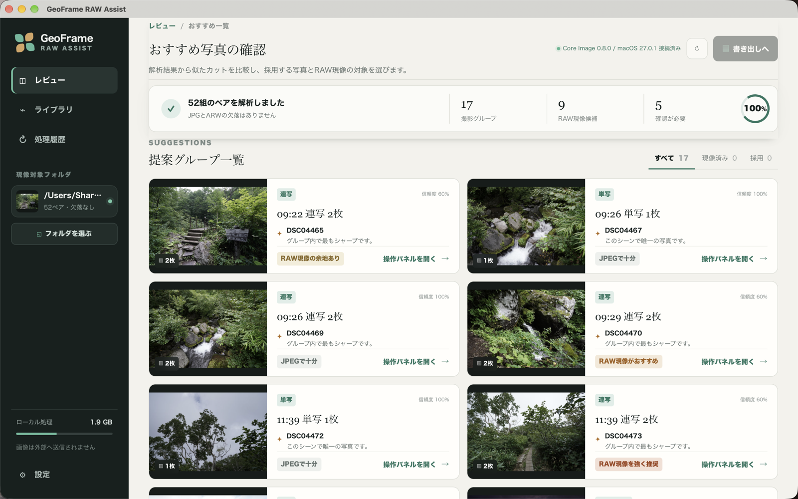
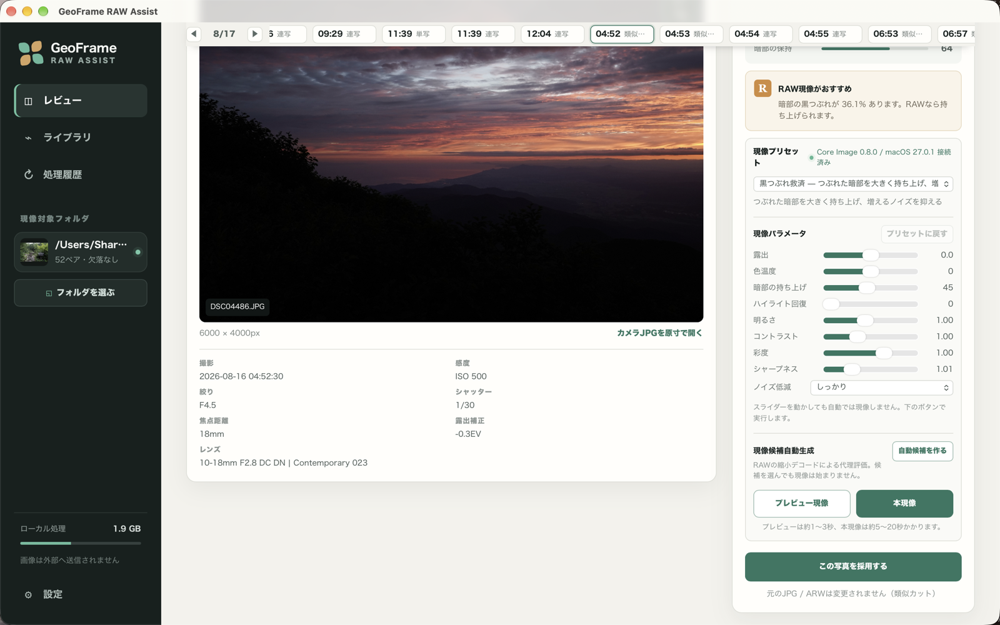
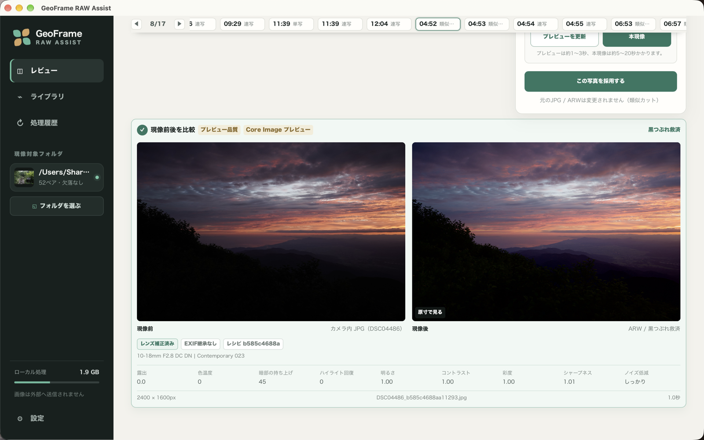
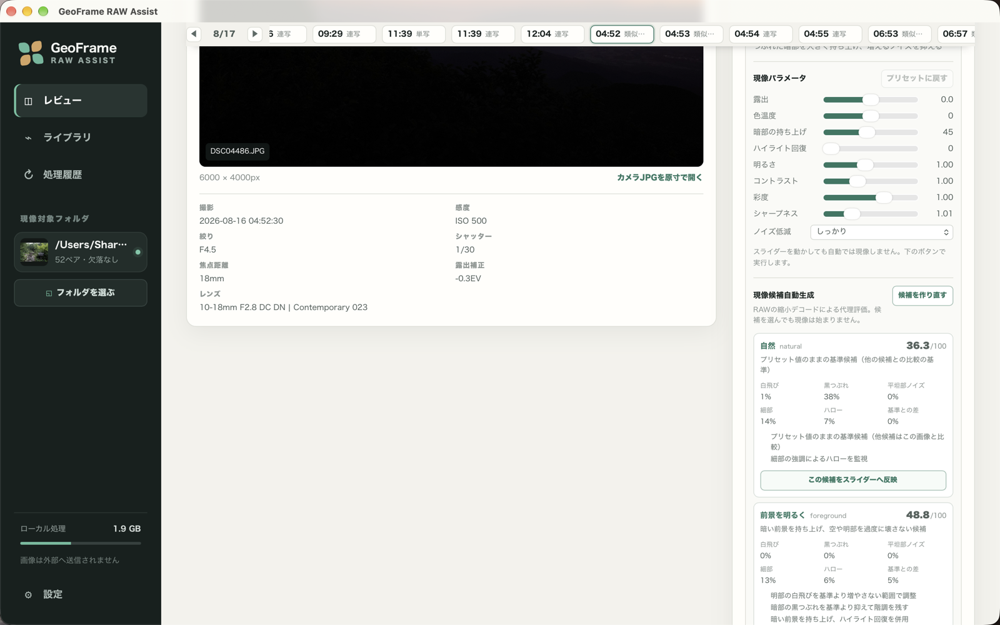

類似カットのグループ化と代表選定
JPEG の EXIF、採点、サムネイルをもとに撮影グループへまとめます。代表のカットには、シャープネスや白飛びの少なさなどの推薦理由が付きます。代表は手動で変更できます。
RAW development assistant for macOS
旅行で撮った JPEG と ARW(ソニー α)の同名ペアを解析して、似たカットをまとめ、代表を選びます。RAW 現像が効きそうなカットを推薦し、プリセットとスライダーで現像できます。元の JPG と ARW は変更しません。
開発中のアプリです。現在は、ソースからビルドして使います。
Screens
撮影グループの一覧から、現像、前後比較、現像候補の生成まで。




Features
JPEG の EXIF、採点、サムネイルをもとに撮影グループへまとめます。代表のカットには、シャープネスや白飛びの少なさなどの推薦理由が付きます。代表は手動で変更できます。
グループごとに、RAW 現像をどのくらい勧めるかを「強く推奨」「推奨」「検討」「JPEG で十分」の 4 段階で示します。
11 種のプリセットから選び、露出、色温度、シャドウ持ち上げ、ハイライト回復、明るさ、コントラスト、彩度、シャープネス、ノイズ低減の 9 項目を調整できます。写真を開いたときの初期プリセットは、解析の推薦理由に合わせて選ばれます。
まず長辺 2400px のプレビューで確かめ、確定したら原寸で本現像します。現像の前後は並べて比較できます。本現像の JPEG には、ペアのカメラ JPEG の EXIF を引き継ぎます。
露出を変えて撮った 2〜9 枚を、Exposure Fusion で 1 枚に合成します。手持ちのズレは、合成の前に位置合わせします。使うフレームは手動で選びます。
RAW を縮小して読み込んだ代理画像で調整値を探索し、「自然」「SNS 向け」などの候補を指標と理由つきで出します。美的な正解や最終的な画質を保証するものではなく、選ぶのは人です。
選んだ写真を、JPEG と記録用の manifest.json として書き出します。書き出したバッチは、Apple の「写真」アプリのアルバムに登録できます。
Workflow
最初に、画面左の「現像対象フォルダ」で、JPEG と ARW を入れたフォルダを選びます。
フォルダの JPEG を解析して、撮影グループにまとめます。結果は保存され、2 回目からはすぐに表示されます。
グループごとの代表と推薦理由、RAW 現像の推薦レベルを見て、現像するカットを選びます。
プリセットとスライダーで調整し、プレビューで確かめてから本現像します。前後比較もできます。
露出ブラケットのカットは、フレームを選んで 1 枚に合成できます。
選んだ写真を書き出し、必要なら Apple の「写真」アプリへ登録します。
処理時間の目安(macOS 27.0.1 / Apple M3、ISO 6400 の 1 カット、現像エンジン単体の計測): プレビュー約 1.0 秒、原寸約 2.0 秒。環境や写真によって変わります。
Setup
配布用のアプリはまだありません。ソースからビルドして使います。
DSC02943.JPG と DSC02943.ARW)の同名ペアです。git clone https://github.com/ysogabe/geoframe-raw-assist.git
cd geoframe-raw-assist
npm install
env -u CI npm run tauri:dev起動すると、現像エンジン(Swift の Core Image CLI)を先にビルドします。env -u CI は、環境変数 CI が設定されていると tauri CLI がエラーになるための指定です。詳しい手順は README を参照してください。
FAQ
ソニー α の既定の命名(DSC#####.JPG と DSC#####.ARW)の同名ペアだけが対象です。動作の確認は α6400 の ARW で行っています。ほかのメーカーの RAW 形式(CR2、NEF など)や、RAW だけのフォルダは対象になりません。サブフォルダの中は見ないので、写真は選んだフォルダの直下に置いてください。
変わりません。元の JPG と ARW は、どの操作でも変更しません。現像した写真や解析の結果は、アプリのデータ用フォルダに別のファイルとして保存されます。書き出しは、そこからのコピーです。
解析、現像、合成、書き出しは、すべてこの Mac の中で行います。写真をインターネットへ送る機能はありません。「写真」アプリへの登録も、この Mac の中の操作です。
必要ありません。以前は Python のサーバーを使っていましたが、取り除いて、1 つのアプリにまとめました。現像は Rust と Swift(Core Image)で行います。Python が必要なのは、開発者向けの評価スクリプトを動かすときだけです。
本現像と本合成は、ペアのカメラ JPEG の EXIF を引き継ぎます。カメラが GPS を記録していれば、それも残ります。アプリが新しく位置情報を書き込むことはありません。MakerNote は引き継がず、向きは正位置(Orientation 1)に直します。
選びません。候補は、縮小した代理画像で評価した結果です。美的な正解や最終的な画質を保証するものではなく、白飛びや黒つぶれ、ノイズなどの指標と理由を見て、人が選ぶ使い方を想定しています。候補を選んだだけで、現像が始まることも、元のファイルが変わることもありません。
Read more